Ни грамма химии
Мясо, овощи, мука, яйца и специи. Без консервантов, усилителей вкуса и ГМО — то, что Алёна готовит своей семье.
Алёна лепит пельмени, вареники, позы и котлеты в своём мини-цехе — из настоящего мяса, овощей и муки. Без химии и консервантов. Из морозилки на стол — за 10 минут.
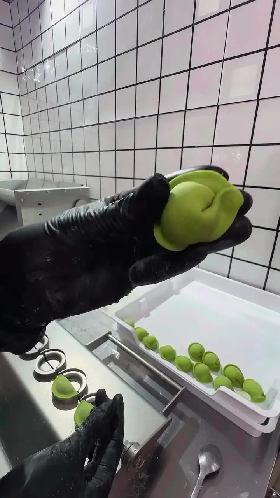
Мясо, овощи, мука, яйца и специи. Без консервантов, усилителей вкуса и ГМО — то, что Алёна готовит своей семье.
Калории, белки, жиры и углеводы для каждого изделия. Удобно, если вы на ПП или считаете рацион.
Санкнижка, все разрешения и профессиональное оборудование. Никаких «серых» кухонь.
Привезём по Иркутску в крафт-пакете. Заказ — пара сообщений в Direct.
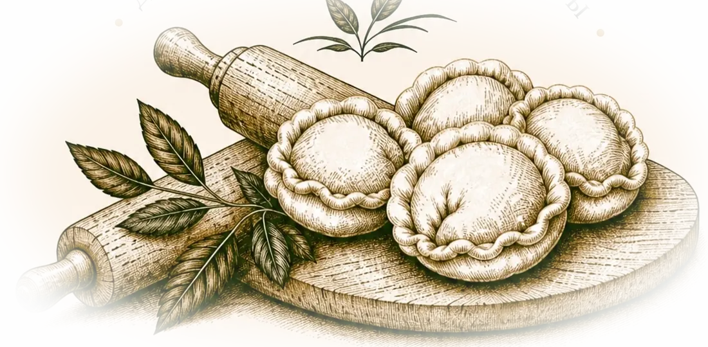
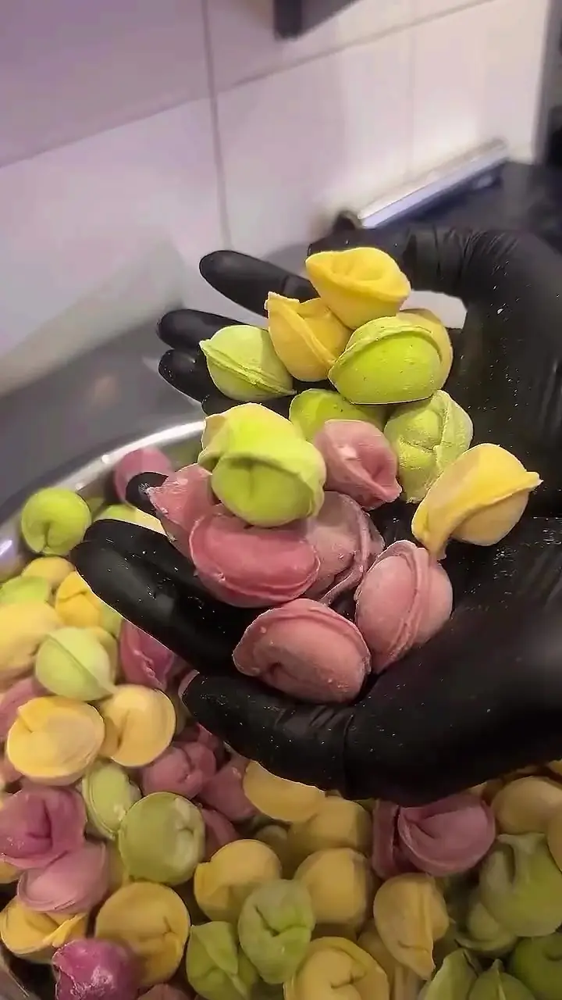
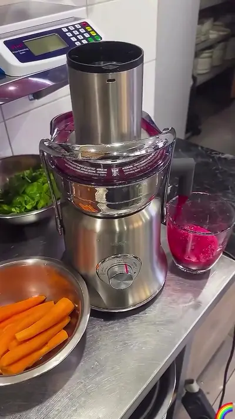
Хотите накормить ребёнка мясом — легко и без слёз? Тесто окрашиваем только свежевыжатым соком. Малыш видит радугу на тарелке и даже не замечает, что ест полезное.
Зелёный — сок свежего шпината. Мягкий вкус и яркий цвет без капли красителя.
Полуфабрикаты — не враг фигуры, а помощник. В ПП-меню — куриные пельмени и вареники на безглютеновой муке, котлеты с брокколи и цукини, голубцы и перцы с курицей, сырники без сахара.
Работала в маленьком цехе и всё время думала: а что если сделать всё по-другому?
Не просто побелить стену: порезанные пальцы и всё переделанное по нескольку раз.
Сломался морозильный ларь — и весь товар пропал. Вспучило стену в цеху. Хотелось лечь и плакать неделю. Но я не остановилась.
Яркий, чистый, современный. Без поддержки семьи, друзей и каждого вашего «огонёчка» в сторис я бы не справилась.
Результат дают действия, а не мысли. Если делаешь с душой — люди это чувствуют.
Алёна
Профессиональная тестораскатка, планетарный миксер, точные весы и отдельная соковыжималка для цветного теста. Санкнижка и все разрешения — честно, как для своей семьи.
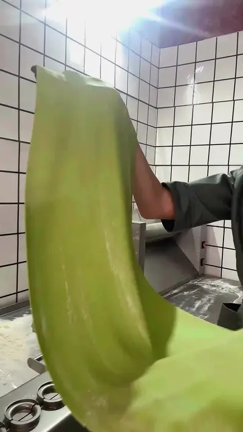
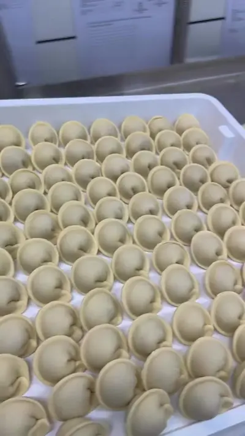
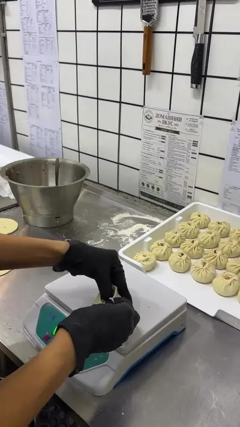
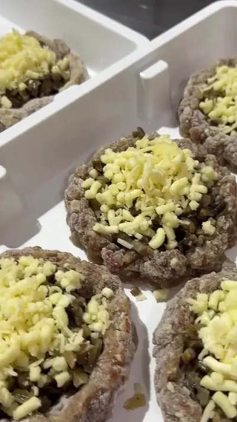
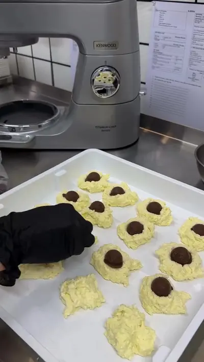
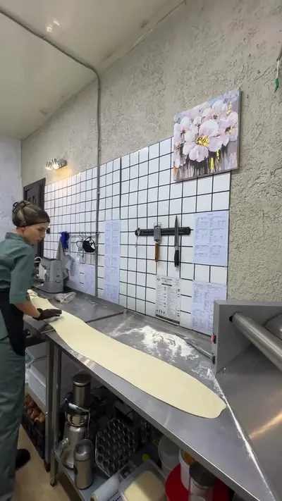
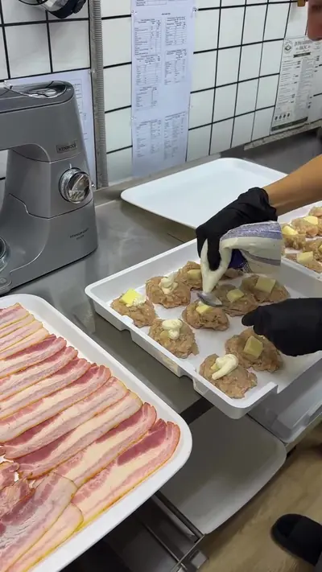
Нажмите «+» у блюд в меню. Корзина посчитает сумму.
Текст заказа скопируется сам — вставьте его в сообщение @hometeste.38.
Алёна подтвердит время и привезёт заказ по Иркутску в крафт-пакете.
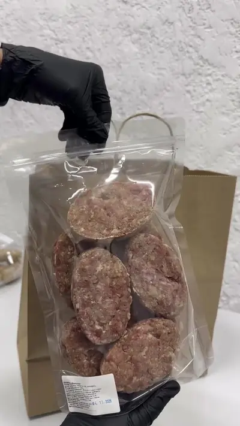
Не размораживая — в кипящую подсоленную воду. Варить после всплытия.
Прямо из морозилки — на сковороду под крышку, в духовку или мультиварку.
Выложить с соусом в сковороду, залить водой, накрыть крышкой и тушить.
В морозилке до 3 месяцев. Повторно не замораживать.
Время ориентировочное — точнее подскажет Алёна.
В мини-цехе «Домашний вкус». Заказ принимаем в Instagram Direct @hometeste.38 — пельмени, вареники, позы, хинкали, голубцы, котлеты, блинчики и сырники ручной лепки. Доставка по Иркутску бесплатная.
Пельмени ручной лепки «Домашние» (свинина и говядина), «Курица, пармезан, шпинат» и детские «Цветные» — 640 ₽ за 800 г. Куриные пельмени на безглютеновой муке — 740 ₽ за 800 г.
Нет. Только натуральные продукты: мясо, овощи, мука, яйца, специи. Цветное тесто окрашено соком шпината, свёклы и моркови — без красителей, усилителей вкуса и ГМО.
Да, есть отдельное ПП-меню: куриные пельмени и вареники на безглютеновой муке, котлеты с брокколи и цукини, голубцы и перцы с курицей, ПП-сырники. Для каждого изделия посчитано КБЖУ.
Детское меню: цветные пельмешки, мини-вареники, мини-котлеты, цветные фрикадельки, тефтели, блинчики с творогом и сырники. Яркий цвет даёт натуральный овощной сок — дети едят с удовольствием.
В морозильной камере при −18 °C. Срок годности большинства изделий — 3 месяца. Повторно не замораживайте.
Соберите корзину на сайте и нажмите «Отправить в Direct» — текст заказа скопируется, останется вставить его в сообщение. Алёна подтвердит наличие и время доставки. Доставка по Иркутску бесплатная.
Цех оборудован профессиональной техникой, у мастера есть санитарная книжка и все разрешения. Рабочее место — чистое, как в аптеке, и его не стыдно показывать в каждом видео.